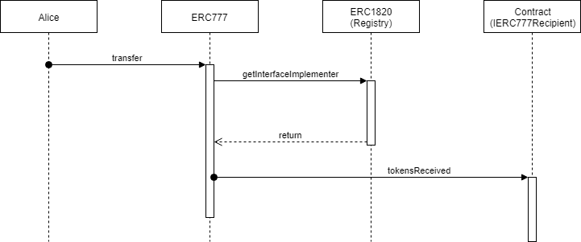

Unlike ERC20, a standard that is widely adopted in Ethereum ecosystem, ERC777 is often referred to as a new kid in town. A kid with a huge potential. Some will even claim that ERC777 is the valid successor of ERC20 standard. ERC777 standard specification is described in EIP777 (Ethereum Improvement Proposal) document.
In this blog post we will explore if these bold claims are justified, and give an in-depth overview on ERC777 advantages (as well as some disadvantages), in comparison to ERC20 standard.
Say that you want to allow a third-party account (or contract) to spend your tokens. The most common use case for this scenario is when you use Crypto exchange services.
Fist step in this process is that you need to approve the spender account and set the limit of
your funds that they are authorized to spend, by calling the approve method on ERC20
smart contract. Apart from trusting the third-party with your funds, you also need to make sure
that the spending limit is always sufficient for the required transactions.
ERC777 standard mitigates the above described problem by introducing the concept of operators. As usual, operators are certain accounts that have permissions to execute specific tasks. In case of ERC777 there are two categories of operators:
Any ERC777 token holder address is allowed to authorize a regular Operator for its address, by invoking the
authorizeOperator method. Analog to this, any ERC777 token holder is able to revoke the operator
for its address (including the default operator), by invoking the revokeOperator
method.
In YiDaiBi ERC777 implementation, the default operator is the address used for token deployment.
Another small (and less obvious) benefit of utilizing the operators feature is the fact that user is no longer required to worry about transaction fees and gas price. This can now be delegated to the operators.
ERC777 Hooks are peaces of code that are tied (hooked) to sender and receiver accounts. Essentially, they are smart contracts that implement:
tokensToSend
tokensReceived
Addresses of smart contracts that implement these two interfaces are stored in ERC1820 registry, paired up with the addresses that they are "hooked" to.
If the sender address has a matching IERC777Sender implementation in the registry, its tokensToSend function will be
called before performing the transaction. If no matching implementation is found, transfer will proceed as usual.
If the recipient address has a matching IERC777Recipient implementation in the registry, its tokensReceived function will be
called after performing the transaction. If the recipient address is a regular user address and no matching implementation is
found, transfer will proceed as usual. However, if the recipient address is a contract address, and no matching implementation is
found, the transfer transaction will be reverted.
On the diagram below, you can see the flow of a "hooked" transfer call.

So, the introduction of hooks allows us to enhance the transfer functionality of the ERC777 token, even after the token itself had been deployed. It also offers a possibility to revert the function call, given that certain conditions necessary for execution aren't met.
The advanced ERC777 functionality does come with some minor drawbacks:
The video below is a step-by-step tutorial on how to create your own ERC777 tokens using the YiDaiBi application:
Create your own ERC777 token with YiDaiBi!
If you've completed this tutorial, we recommend you follow up with these tutorials:
Thank you for reading this far! You can: - follow us on Twitter - subscribe to our channel on Youtube
We are Merkle Blue DOO, a blockchain startup.
Vardarska 1c/54, 21000 Novi Sad, Serbia
Phone: (+381 64 321 2640)
E-mail: (yidaibi@zhenailian.com)